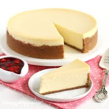

Best Easy Cheesecake

Tasty Cheesecake Doesn't Have to Be hard to Make
This recipe is easy enough for begginners, but delicious enough to be professional. With easy ingredients and easy prep, this big flavor treat wil be sure to please everyone, including the chef who had to labor over it. And when we say labor we mean a "cheesy" cake walk :)
Whether your a professional chef of ten plus years, or reading a cook book for the first time, this recipe is a great one to start with or have in your back pocket for emergencies.
Ingredients for Crust
1.5 Cups graham cracker crumbs
7 Tbs melted butter
2 tbs Sugar
1 Tbs brown sugar
Ingredients for Cheesecake Filling
32oz of cream cheese
1 cup sugar
2/3 cup of Sour Cream
1.5 tsp Vanilla Extract
1/8 tsp salt
4 Large Eggs
Steps For Graham Cracker Crust
- The first step is the simplest. You want to bring all of your ingredients up to room temperature. This makes the chease and butter easier to meld with your other ingredients. This step will also insure that your cheesecake bakes perfectly.
- Preheat your oven to 325F (160C)
- ombine graham cracker crumbs, white, and brown sugar and mix well. Then you will mix in melted butter, using a fork to make sure it is combined well
- Pour the crust contents into a 9" Springform pan and push the crust into the corners of the pan, spreading it evenly across the bottom. Now put aside.
Steps for the Cheesecake Filling
- Place cream cheese into a mixing bowl and mix til smooth.
- Add sugar and stir again until creamy.
- Add sour cream, vanilla extract and salt and stir until well combined.
- Add each of the eggs, lightly beaten, and one at a time, into the mixture. You shouldn't add the next egg until the one before it is well mixed into the mixture.
- Make sure to scrape the sides of the bowl, to ake sure all the contents are mixed evenly.
- Pour mixture into graham cracker crust.
- Place cheesecake on a cookie sheet and transfer into the oven. Place on the center rack and bake for 75 minutes.
- Sides should be golden. Remove from oven and let sit on counter for ten minutes before removing springform from pan.
- Let the cheasecake sit another two hours before transfering it to the refrigerator, where it should set for at least 6 more hours, or overnight.
- Enjoy!